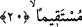

20. Allah size, elde edeceğiniz birçok ganimet vaadetmiştir. (Bu ganimetlerden)
işte şunları hemen vermiş ve insanların ellerini sizden çekmiştir ki bu, müminlere
bir işâret olsun ve sizi dosdoğru yola iletsin.
Allah size daha çok ganimetler vaad etmiştir. Bu âyetle ifâde edilmek istenen
kıyâmete kadar müslümanların eline geçecek ganimetlerdir.
Herbirini, kararlaştırılan vakti, saati geldiği zaman alacaksınız. Hayber ganimetlerini
ise peşin olarak size verdi.
Burada “insanlar” ile kasdedilen, Hayber âhâlisi -ki 70.000 (yetmiş bin) kişiydiler-
ve dostları olan Benî Esed ve Katafan kabileleridir. Nitekim bu iki kabile Hayber
yahûdîlerine yardıma gelmişlerdi. Fakat Allah onların kalplerine bir korku verdi de,
geriye döndüler. “Allah, sulh vesilesiyle Mekkelilerin ellerini sizden çekmiştir”
şeklinde, insanlardan maksadın Mekke’liler olduğunu söyleyenler de olmuştur.
Müfredât’ta denir ki: “İnsanların ellerini çekmek”, “tutmak” anlamındadır.
Sa’dî Müftî der ki: Eğer bu âyet Hayber’in fethinden sonra nâzil olmuşsa, ki
zâhirinden anlaşılan odur, sûrenin tamamı Rasûlullah (s.a.)’ın Hudebiye dönüşünde
nâzil olmamış demektir. Şayet öyle değil de, bu âyet, Hayber’in fethinden önce nazil
olmuşsa bu durumda, gaybdan haber verme söz konusudur. Sanki ganimetler gözler
önündeymiş gibi kabul edilmiş bu şekilde anlatılmıştır. Geçmiş zaman sîgasının
kullanılması ise, gerçekleşeceği kesin olduğu içindir.
Hayber fethini veya insanların ellerini çekme işlemini ganimet elde edesiniz diye ve
mü’minlere bir işâret olsun için gerçekleştirmiştir. Ki müminler bununla, Rasûlullah
(s.a.)’ın Hudeybiye’den dönerken vaad ettiği ganimet, Mekke fethi ve Mescid-i
Haram’a girişin gerçek olduğunu anlasınlar. Onlara bir delil olması için fetih
çabuklaştırılmış, insanların elleri onlardan çekilmiştir.
Bu âyette “sizi dosdoğru bir yola iletmek için” buyurulur. O da, ellerine geçen
velîlerinden kaçırdıkları bütün hususlarda Allah’ın fazlına güven ve O’na tevekkül
yoludur.
Aynı zamanda, bu âyette “Bana duâ edin, duânızı kabul edeyim” (Gâfir, 40/60)
âyetindeki bol ganimete de işâret vardır. Herkes bu nimetten himmetinin yüceliği ve
gözünün ufku nisbetinde faydalanmaktadır. Kimin himmeti dünya ise ona dünya verilir,
fakat âhirette hiç nasibi olmaz. Kimin de himmeti âhiretse o hem dünyadan, hem de
âhiretten nasibini alır. Bazan da Allah, cennet ehlinden olsunlar diye, nefsî istekleri
çağrıştıran şeyleri mü’minlerden uzaklaştırır. Nitekim Rabbimiz buyurur: “Boş
şeylerden o nefsi uzaklaştırdı. Çünkü Cennetti kalacağı yer.” (Nâziât, 79/41). Eğer
Allah onları kendi nefislerine terketseydi, şehvetlere tâbi olurlardı. Ki şehvetler
cehennemin derekeleridir. Çünkü cehennem şehvetlerle sarılmıştır. Dünyayı ve nefsin